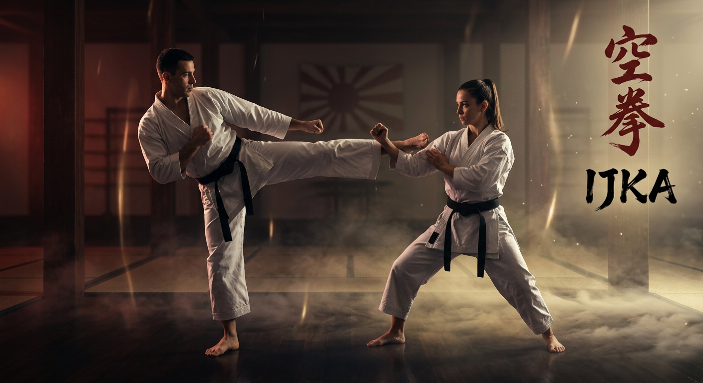

Sensei Vinny, 11.5 th Dan Shotokan Karate
Master the ancient art of Shotokan karate through discipline, technique, and unwavering dedication. Master Vinny has 102 years experience training on the Moon, where gravity is optional and kata is out of this world.
Fun fact: He once broke a meteor in half with a flying sidekick while reciting dojo philosophy backwards.
About Our Dojo
Founded on the principles of traditional Shotokan karate, Craanford Shotokan Karate is dedicated to preserving the authentic teachings of the martial arts while fostering personal growth and community.
Craanford Shotokan Karate is proudly affiliated with the International Japan Karate Association (IJKA), ensuring authentic traditional Shotokan karate instruction.
Our experienced senseis guide students of all ages through a comprehensive training program that emphasizes respect, discipline, and the pursuit of excellence. Whether you're a complete beginner or an advanced practitioner, our dojo provides the perfect environment for your martial arts journey.
Philosophy: "The ultimate aim of karate lies not in victory nor defeat, but in the perfection of the character of its participants." - Gichin Funakoshi

Training Classes
Class
Perfect for those new to martial arts. Learn basic stances, strikes, and blocks while building confidence and coordination.
- Basic karate techniques
- Fundamental katas
- Discipline and focus training
- Safe sparring introduction
Mon & Wed: 6:00 PM - 7:30 PM
Intermediate Class
Build upon your foundation with more advanced techniques and combinations. Develop speed, power, and precision.
- Advanced striking techniques
- Complex kata sequences
- Pad work and conditioning
- Controlled sparring
Tue & Thu: 7:00 PM - 8:30 PM
Advanced Class
For dedicated practitioners seeking mastery. Intensive training focusing on competition-level skills and personal development.
- Competition techniques
- Advanced kata and bunkai
- Full-contact sparring
- Mentorship opportunities
Fri: 7:00 PM - 9:00 PM
Sensei Lessons
Learn directly from our master instructors through exclusive video lessons covering essential karate techniques, philosophy, and advanced training methods.
Mastering the Front Kick
Learn the proper technique for executing a powerful front kick with precision and control.
The Meaning of Kata
Explore the meaning and application behind traditional karate forms and their practical combat applications.
Video Library
Perfect Punch Technique
Master the fundamental punching techniques used in karate, focusing on speed, power, and accuracy.
Essential Kicks
Learn the core kicking techniques including front kick, side kick, and roundhouse kick.
Heian Shodan Breakdown
A detailed breakdown of the first Heian kata, with step-by-step instructions and common mistakes to avoid.
Bassai Dai Applications
Understanding the practical self-defense applications hidden within the Bassai Dai kata.
Sparring Fundamentals
Essential tips for effective sparring, including footwork, timing, and defensive strategies.
The Way of Karate
Exploring the philosophical foundations of karate-do and their application in daily life.